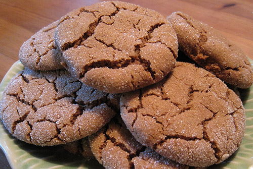

15 min
12 min
24
Ingredients
- 2 1/4 cups all-purpose flour
- 2 teaspoons ground ginger
- 1 teaspoon ground cinnamon
- 1 teaspoon baking soda
- 1/2 teaspoon ground cloves
- 1/2 teaspoon fine salt
- 1 stick butter, at room temperature
- 1 cup sugar, plus more for rolling
- 1/3 cup molasses
- 1 egg
Directions
1)Preheat the oven to 375 degrees F. Line two baking sheets with parchment paper.
2) Whisk the flour, ginger, cinnamon, baking soda, cloves and salt together in a medium bowl. Set aside.
3) Beat the butter and sugar together in a large bowl with an electric mixer on medium-high speed until well combined, about 3 minutes. Add the molasses and egg and beat until lighter in color, about 3 minutes. Add the flour mixture and mix on low until well blended.
4) Using a tablespoon, form the dough into 1-inch balls and roll in sugar. Place each ball 2 inches apart on the prepared baking sheets. Bake until golden and crackled, 12 to 15 minutes; the cookies will still be a little soft.